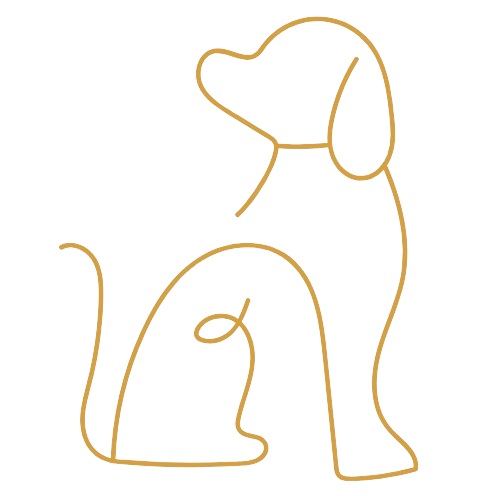

Perfil Detalhado dos Cães
Informações sobre a personalidade, histórico de saúde, e necessidades especiais de cada cachorro disponível para adoção.
Carregando...
Segundo a Organização Mundial da Saúde (OMS), existem cerca de 30 milhões de animais abandonados nas ruas do Brasil, sendo 20 milhões cachorros.
Esses animais sofrem todo dia com o abandono, doenças físicas e mentais, fome e maus-tratos, sem ter voz para se defender eles dependem de iniciativas governamentais e ongs que trabalham com o resgate, cuidado e adoção.
Informações sobre a personalidade, histórico de saúde, e necessidades especiais de cada cachorro disponível para adoção.
Oferecemos agendamento fácil e rápido para consultas veterinárias, garantindo o melhor cuidado para seu pet.
Encontre uma lista de veterinários próximos para cuidados especializados, com informações de contato e áreas de especialização.
Permite que visitantes denunciem casos de abandono ou maus-tratos, com a opção de enviar descrições detalhadas e evidências (fotos, vídeos).
A superpopulação de animais de estimação e o despejo de ninhadas indesejadas de cachorros é um efeito colateral muito comum da posse irresponsável de animais de estimação. Assim, todos os anos, milhares de cachorros indesejados e cães mais velhos são jogados na rua ou entregues aos abrigos. Muitos desses animais nunca são adotados e acabam sendo sacrificados. Mas este triste desperdício de vida saudável pode ser reduzido através da castração de cachorros.
Embora não elimine completamente o risco, a castração pode reduzir em até 95% a chance de o pet desenvolver certos tipos de doenças ligadas, principalmente, às estruturas e aos hormônios sexuais, como câncer de mama, útero, testículo e próstata, além de piometra (infecção bacteriana do útero). Soma-se a isso o fato de a cadela ficar livre do risco da gravidez indesejada e das possíveis complicações dela decorrentes.
© All Rights Reserved. Design by Pet´s friends